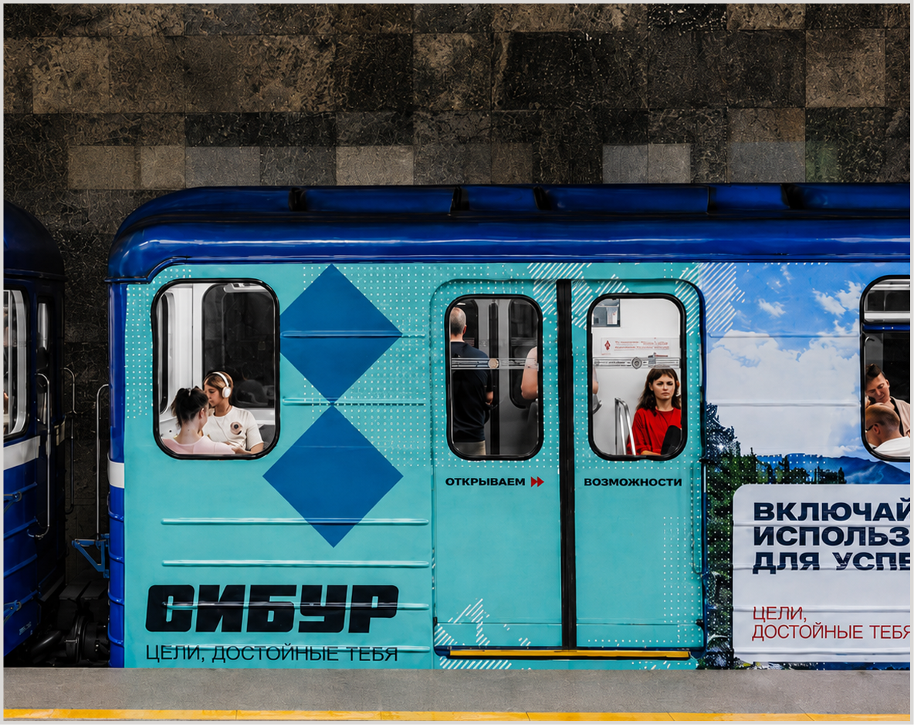

ЗАДАЧА
Сделать бренд работодателя СИБУРа заметным вне digital и встроить карьерное предложение в летний контекст — туда, где аудитория уже находится в пути.
ЛИЧНОЕ ПОРТФОЛИО2026
CVEmployer brand campaign
Летнюю HR-кампанию СИБУРа построили на знакомом отпускном коде «всё включено» и вынесли карьерное предложение из digital в транспортную среду — туда, где люди уже находятся в пути.


Сделать бренд работодателя СИБУРа заметным вне digital и встроить карьерное предложение в летний контекст — туда, где аудитория уже находится в пути.
Взяли знакомое отпускное «всё включено» и перевели его на язык карьеры: вместо отеля и трансфера — амбициозные задачи, сильная команда, масштабные проекты и возможности роста.
Разложили идею по travel-носителям: брендированный поезд метро, аэропорт, посадочные талоны, бортовые журналы S7 и Utair и журнал РЖД. Каждый носитель продолжал язык путешествий и вёл на карьерный сайт СИБУРа.
Лето — сезон отпусков и поездок. Поэтому карьерный оффер решили встроить в контекст, где люди уже думают маршрутами, билетами и следующими точками.
Знакомую формулу «всё включено» переосмыслили как предложение работодателя: в СИБУРе «включены» задачи, команда, проекты и возможности роста.
Визуальную систему собрали на языке путешествий: билет до СИБУРа, пункты назначения, летние пейзажи и герои в отпускных образах с элементами рабочей экипировки.
Креативы появились в метро, аэропорту, на посадочных талонах, в бортовых журналах S7 и Utair и журнале РЖД — носителях, которые сами стали частью идеи.
Так СИБУР встречал потенциальных кандидатов прямо в пути и говорил о карьере через понятный летний код, а не через стандартный HR-баннер.


ОТКРЫТА К НОВЫМ ЗАДАЧАМ
И ИНТЕРЕСНЫМ БРИФАМ